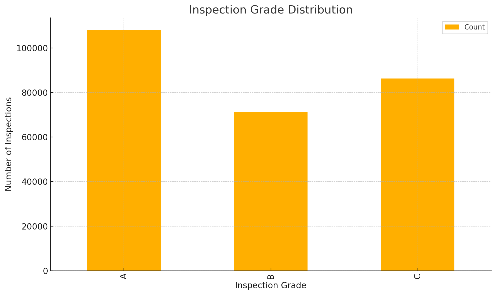

Introduction
Our project predicts NYC restaurant health inspection outcomes (A/B/C) using machine learning, enabling targeted resource allocation.
Restaurants in New York City undergo thousands of health inspections each year, and low scores (“C” or “Fail”) correlate with serious public‐health risks and costly shutdowns. By training an ordinal classification model on historical inspection data and neighborhood features, this project not only forecasts the likelihood of a low score, but also surfaces the most influential factors—helping health officials prioritize scarce inspection resources and enabling restaurant owners to target compliance improvements before violations occur.
Data & Methods
- Data Source: NYC Open Data—2018–2024, ~298K records after cleaning.
- Records & Scope: 298,512 total inspections across 22,314 unique restaurants from 2018-01-01 to 2024-12-31.
- Temporal Split: Records before February 17, 2025 for training; on/after for testing to prevent future leakage.
- Preprocessing: Cleaned missing values; binned categorical features; parsed inspection dates to cyclical sine/cosine; computed rolling violation aggregates; standardized continuous metrics.
- Exploratory Analysis: Grade distribution: A (36%), B (24%), C (29%); average violations per restaurant: ~5.2; median inspections per restaurant: 12.
- Modeling: Ensemble of LogisticIT, RandomForestClassifier, and LightGBM (ordinal via rounding + thresholds) achieved ~88.6% accuracy.
- Evaluation: 5-fold cross-validation; metrics include accuracy, Cohen’s QWK, MAE, and precision/recall per grade bin.
Performance Metrics
Strong ordinal performance with minimal overfitting and low average error.
Results
Key Findings
- The three most common cuisines are American, Chinese, and Coffee/Tea, but some niche cuisines show significantly higher risk scores.
- Manhattan and Brooklyn have the highest restaurant densities; however, their average risk levels differ by neighborhood.
- Lower inspection grades cluster in certain cuisine–borough combinations, suggesting both demographic and operational patterns.
Recommended Actions
- Prioritize additional inspections and targeted training in identified high-risk neighborhoods of Brooklyn and the Bronx.
- Roll out compliance workshops for operators of cuisines with elevated risk (e.g., Southeast Asian, Latin American).
- Implement focused interventions on critical violation categories (food temperature control, sanitation) through on-site coaching and web-based modules.
Grade Distribution
Figure: Distribution of inspection grades (A/B/C) in the cleaned dataset.
Discussion
TL; DR
The ensemble demonstrates robust predictive power. Future work includes richer features (demographics, geospatial), hyperparameter tuning, and exploring CatBoost or neural ordinal regressors.
Limitations & Modeling Bias
- Geographic skew: Our feature set is heavier on borough‐level aggregates than fine-grained street-level metrics, which may understate local “food desert” effects.
- Cuisine sampling bias: Rare cuisines have fewer historical inspections, so their risk estimates have higher variance—our ordinal model may under- or over-predict extreme outcomes for those categories.
- Estimator disagreement: While the LightGBM ordinal ensemble delivered the best cross–validation accuracy, simpler estimators (Random Forest, LogisticIT) sometimes flip predictions on borderline cases. This reflects differences in how they handle class imbalance and feature interactions; ensembling mitigates but does not eliminate these divergences.
- Temporal drift: Inspection protocols and scoring criteria evolve over time. A model trained on 2015–2022 data may misalign with post-2023 practices without regular retraining.
Next Steps
- Incorporate business hour foot-traffic data and real-time violation follow-ups to capture operational risk more directly.
- Perform periodic model retraining (e.g., quarterly) and monitor drift metrics (KL-divergence on feature distributions).
- Expand to a multi-task setup predicting both inspection score and specific violation types for more actionable insights.